Turtle Art¶
About¶
Turtle Art, also known as Turtle Blocks, is an activity with a Logo-inspired graphical “turtle” that draws colorful art based on snap-together visual programming elements. Its “low floor” provides an easy entry point for beginners. It also has “high ceiling” programming, graphics, mathematics, and Computer Science features which will challenge the more adventurous student.
Where to get Turtle Art¶
Is included in the OLPC image, and can be downloaded from the Sugarlabs Activities repository
Note
There are two inter-compatible programs: Turtle Art and Turtle Blocks. Turtle Art, which closely parallels the Java version of Turtle Art maintained by Brian Silverman, offers a small subset of the functionality of Turtle Blocks. Turtle Blocks is the version included in the Sugar distribution. Sugar users probably want to use Turtle Blocks rather than Turtle Art. (Also see Turtle Confusion, a collection of programming challenges designed by Barry Newell.)
Using Turtle Art¶
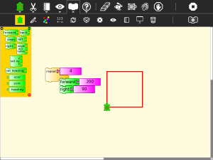
Start by clicking on (or dragging) blocks from the Turtle palette. Use multiple blocks to create drawings; as the turtle moves under your control, colorful lines are drawn.
You add blocks to your program by clicking on or dragging them from the palette to the main area. You can delete a block by dragging it back onto the palette. Click anywhere on a “stack” of blocks to start executing that stack or by clicking in the Rabbit (fast) , Turtle (slow) or Bug (debug) buttons
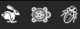
on the Project Toolbar.Tutorials¶
Find some interesting Turtle Art tutorials.
Challenges¶
Try some interesting Turtle Art challenges.
Toolbars¶
Main Toolbar¶
From left to right:
Activity toolbar (includes sharing; saving/loading options);
Edit toolbar (including copy and paste);
View toolbar (including full-screen, coordinate overlays; turtle status, etc.);
Palette toolbar (including all programming blocks);
erase canvas;
run project fast (rabbit);
run project slow (snail);
stop project;
save a snapshot (save a copy of the current state of the project);
load examples;
display help palette;
stop activity
Keyboard short cuts for the above: Alt+ palette; blocks; run; walk; stop; erase; e.g., Alt+e will erase the screen. Esc will return from full-screen mode.
Notes: The run buttons are tied to the Start Block. If no Start Block is used, then all blocks are run when either run button is clicked. The “rabbit” button runs the blocks at maximum speed. The “snail” button pauses and displays the turtle and block values between each step.
On older versions of Sugar (e.g., 0.84), the main toolbar will look like this:
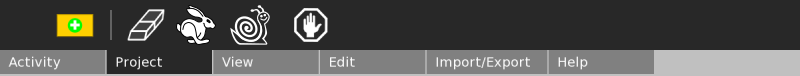
Project Toolbar¶
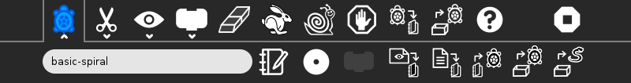
From left to right:
Project title;
Write to Journal (on newer versions of Sugar)
Keep button (not shown; only appears on older Sugar systems)
Share button;
Share blocks; shown in disable state. Used to share stacks of blocks between collaborators.
Save as image;
Save as Logo;
Load a previously saved project from the Sugar Journal;
Load Python code into a programmable block
- Notes:
On older Sugar systems, these controls appear on the Import/Export toolbar.
On smaller screens, the load/save buttons are shown on a palette.
To share a stack, click on the share button. The cursor will change to the hand shape Ta-hand-cursor.png. Place the cursor on any block or stack of blocks and click. The blocks will be shared and the cursor will change back to the arrow shape.
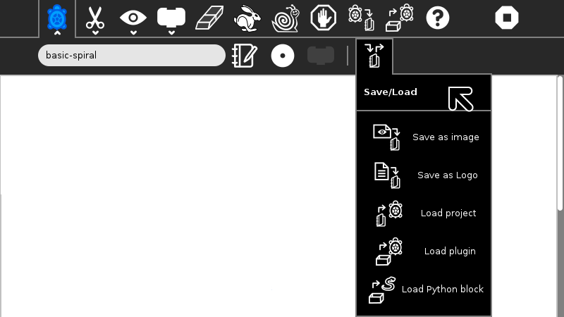
Edit Toolbar¶
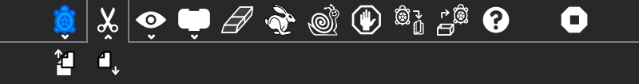
The Edit toolbar is used to copy stacks of blocks to the clipboard and to paste stacks from the clipboard. To copy a stack, click on the copy button or type Ctrl-c. The cursor will change to the hand shape Ta-hand-cursor.png. Place the cursor on any block or stack of blocks and click. The blocks will be copied to the Sugar clipboard and the cursor will change back to the arrow shape. To paste from the clipboard, type Ctrl-v or click the paste button.
From left to right:
Copy
Paste
View Toolbar¶
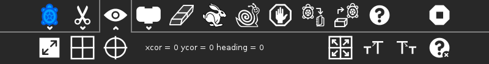
From left to right:
Full-screen button;
Cartesian-coordinate grid;
polar-coordinate grid;
not shown: centimeter-coordinate grid (XO-only);
display of x,y coordinates, heading of turtle;
Rescale-coordinates button;
Grow block size;
Shrink block size
Disable/enable hover help
Palettes Toolbar¶
The palette menus are revealed by clicking on the Block icon on the main toolbar. (On older Sugar systems, select the Projects toolbar. When running Turtle Art from GNOME, the palettes are visible by default.)
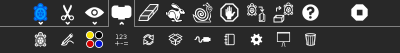
There are ten palettes of program elements available for program construction: Turtle movements; Pen attributes; Color attributes; Numeric operators; Logical operators; Logical blocks; Sensor blocks; Media blocks; Customization functions; and Presentation blocks. An eleventh palette is used for restoring blocks from the trash.
Note: Additional palettes may be loaded by plugin extensions to Turtle Blocks.
Blocks are dragged from the palette onto the canvas surface. To dispose of a block, drag it back onto the palette. (It will be placed onto the trash palette.)
The button, which replaces the Stop button on the main toolbar while the program is executing, is used to reveal the program blocks. Individual palettes can be hidden by clicking on their highlighted tab.
Turtle Palette¶
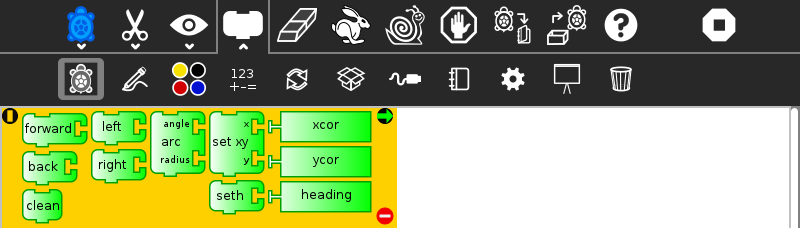
These blocks are used to control the movements of the turtle.
forward: move turtle forward
back: move turtle backward
clean: clear the screen and position the turtle in the center of the screen, pen down, color red, heading 0
left: rotate turtle counterclockwise
right: rotate turtle clockwise
arc: move turtle along an arc
set xy: set turtle x,y position (0,0) is the center of the screen
seth: set turtle heading
xcor: holds current x-coordinate value of the turtle (can be used in place of a number block)
ycor: holds current y-coordinate value of the turtle (can be used in place of a number block)
heading: holds current heading value of the turtle (can be used in place of a number block)
Pen Palette¶
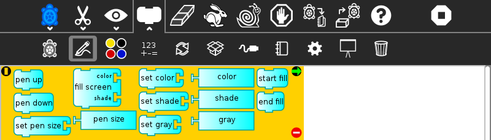
These blocks are used to control the attributes of the turtle’s pen.
pen up: turtle will not draw when moved
pen down: turtle will draw when moved
set pen size: sets the width of the line drawn by the turtle
fill screen: fill the screen with a color/shade and reposition the turtle in the center of the screen
pen size: width of the line drawn by the turtle (can be used in place of a number block)
set color: sets the pen color
set shade: sets the pen shade
set gray: sets the gray-level of the pen (Only available in Turtle Blocks)
color: current pen color (can be used in place of a number block)
shade: current pen shade (can be used in place of a number block)
gray: current pen gray level (can be used in place of a number block) (Only available in Turtle Blocks)
start fill: starts a filled polygon (straight sides, not arcs)
end fill: ends a fill polygon (straight sides, not arcs)
Color Palette¶
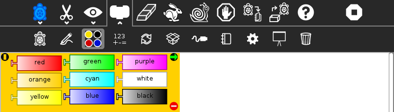
These blocks can be used with the set-pen-color block in place of a number block.
Numbers Palette¶
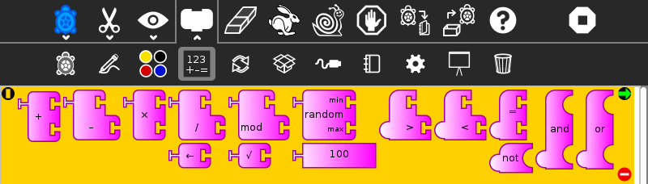
These blocks are arithmetic and boolean operators.
addition: adds two numeric inputs (also can be used to concatenate strings)
subtraction: subtracts the bottom numeric input from the top input
multiplication: multiplies two numeric inputs
division: divided top input (numerator) by bottom input (denominator)
identity: identity function (used for spacing blocks)
modulo (remainder): calculates remainder when dividing top input by the bottom input
square root (Only available with Turtle Blocks)
random number: generates a random integer between the minimum and maximum values
number block: a numeric input
greater than: boolean greater than operator (used with flow blocks)
less than: boolean less than operator (used with flow blocks)
equal to: boolean equal to operator (used with flow blocks)
not: boolean not (Only available with Turtle Blocks)
and: boolean and (Only available with Turtle Blocks)
or: boolean or (Only available with Turtle Blocks)
Flow Palette¶
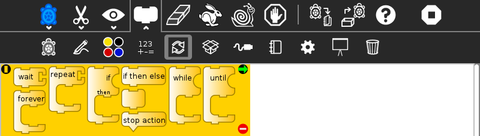
These blocks control program flow.
wait: pause program execution (unit is seconds)
forever: continuously repeat execute stack under the right flow
repeat: repeat the execution of stack under the right flow a specified number of times
if/then: conditional execution of the stack under the right flow (uses boolean operators found on the Number palette)
if/then/else: conditional execution of the stack under the center and right flows (uses boolean operators found on the Number palette)
vertical spacer
stop stack: interrupt execution
while: execute stack under right flow while the condition is true (uses boolean operators found on the Number palette) (Only available with Turtle Blocks)
until: execute stack under right flow until the condition is true (uses boolean operators found on the Number palette) (Only available with Turtle Blocks)
Note: Nesting while and/or until blocks is not always reliable. If you encounter an error, try putting the nested block in a separate stack, accessed with an action block.
Blocks Palette¶
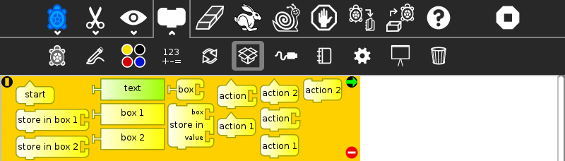
These blocks are for defining variables and subroutines.
start: connects action to toolbar ‘Run’ button
store in box 1: store a number, string, or media object in box 1 (Only available with Turtle Blocks)
store in box 2: store a number, string, or media object in box 2 (Only available with Turtle Blocks)
text: string input
box 1: current value of box 1 (can be used in place of a number block) (Only available with Turtle Blocks)
box 2: current value of box 2 (can be used in place of a number block) (Only available with Turtle Blocks)
box: current value of named box (can be used in place of a number block)
store in: store a number, string, or media object in a named box
action: top of named action stack
action 1: top of action 1 stack (Only available with Turtle Blocks)
action 2: top of action 2 stack (Only available with Turtle Blocks)
action: execute named action stack
action 2: execute action 2 stack (Only available with Turtle Blocks)
action 1: execute action 1 stack (Only available with Turtle Blocks)
Note: When a named action or named box block are used, new blocks appear on the palette that correspond to these names; e.g., if a top of action stack is rename, “to square”, an action block, “to square” is added to the palette.
Sensors Palette¶
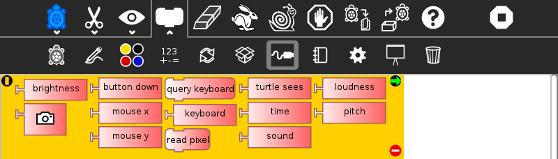
query keyboard: check for keyboard input (results are stored in the keyboard block)
keyboard: current value of keyboard input (can be used in place of a number block)
read pixel: push the RGB value of the pixel under the turtle onto the FILO (blue is first, red is last)
turtle sees: the “palette color” of the pixel under the turtle
time: number of seconds since program began
sound: raw data from microphone ranging -32000 to 32000
volume (loudness): ranging 0 to 32000
pitch: the resolution is +-8Hz
brightness: average luminance seen through camera
camera: grab image from camera
button down: current state of the mouse button (1 == down; 0 == ip)
mouse x: x position of mouse
mouse y: y position of mouse
The OLPC XO can measure external inputs with its microphone jack:
resistance: measurement range is 750 to 14k ohms, (OLPC XO1) and 2k ohms to open circuit (OLPC XO1.5)
voltage: measurement range is DC 0.4V to 1.85V. (OLPC XO1) and 0.17V to 3.0V (OLPC XO1.5)
The OLPC XO 1.75 also includes an accelerometer.
accelerate (not shown): measure the acceleration of the computer. Results are pushed to the stack and can be retrieved by using 3 ‘pop’ blocks (one for X (horizontal), one for Y (vertical), and one for Z (forward/backward))
See Using Turtle Art Sensors for more details about the sensor blocks.
Media Palette¶
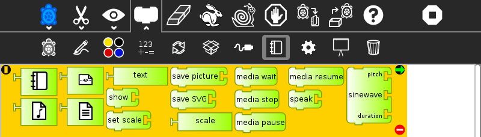
These are a collection of blocks used for displaying media objects, such as images from the Journal.
journal: Sugar Journal media object (used with show block) (also available in Turtle Art)
audio: Sugar Journal media object (used with show block)
video: Sugar Journal media object (used with show block)
description: Sugar Journal description field (used with show block)
text: text string (used with show block; also used with box and action blocks)
show: draw text or display media object from the Journal
set scale: sets the scale of images displayed with show block
save picture: save the canvas to the Sugar Journal as a .png image (note: saves the canvas as displayed)
save SVG: save turtle graphics to the Sugar Journal as a .svg image (note: only saves the changes to the canvas in the current execution run)
scale: sets scale for show block (100% is full-screen)
wait for media: used to pause program while audio or video file plays
media stop: stop current sound or video
media pause: pause current sound or video
media resume: resume playing paused media
speak: sends text to the voice synthesizer
sine wave: plays a sine wave of a given frequency, amplitude, and duration
Extras Palette¶
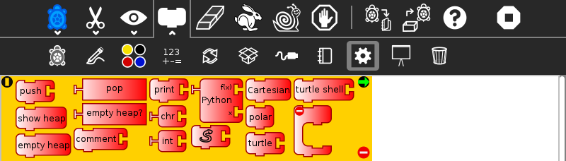
These are a collection of extra blocks for accessing advanced features only available in Turtle Blocks.
push: push value onto FILO (first-in last-out) heap
show heap: show FILO in status block
empty heap: empty the FILO
pop: pop value off of the FILO (can be used in place of a number block)
print: print value in status block (also available in Turtle Art)
comment: program comment (displayed in “walk” mode)
chr: Python chr primitive: converts ASCII to character (useful for converting keyboard input to text)
int: Python int primitive: converts input to integers
Python: a programmable block (can be used in place of a number block)
add your own math equation in the block, e.g., sin(x); This block is expandable to support up to three variables, e.g. f(x,y,z)
Import Python: import Python code from the Sugar Journal (a more general-purpose programmable block). This block accepts a single variable x, as an input or up to 3 variables as an array x[0], x[1] and x[2]
Cartesian: display Cartesian coordinate grid overlay
polar: display polar coordinate grid overlay
turtle: specify which turtle is active
turtle shell: import a image from the Journal to use as the turtle’s ‘shell’, i.e., replace the turtle with a sprite.
sandwich clamp: “clamp” a stack of blocks to hide
Portfolio Palette¶
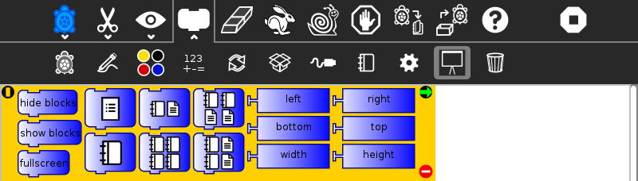
These blocks are used to make multimedia presentations only available in Turtle Blocks.
hide blocks: hides all blocks and palettes (useful for decluttering the screen during presentations) (also available in Turtle Art)
show blocks: shows blocks and palettes (useful for resuming programming after a presentation)
full screen: goes into full-screen mode (hides Sugar toolbars)
list slide: used for bulleted lists; This block is expandable, allowing you to add as many bullets as you need
picture slides: used for picture slides (1×1, 2×2, 1×2, and 2×1)
Only available in Turtle Blocks:
left: holds current x-coordinate value of the left edge of the screen (can be used in place of a number block)
top: holds current y-coordinate value of the top edge of the screen (can be used in place of a number block)
right: holds current x-coordinate value of the right edge of the screen (can be used in place of a number block)
bottom: holds current y-coordinate value of the bottom edge of the screen (can be used in place of a number block)
width: screen width (can be used in place of a number block)
height: screen height (can be used in place of a number block)
Note: The slide blocks expand into stacks that can be edited for customized presentations.
Trash Palette¶
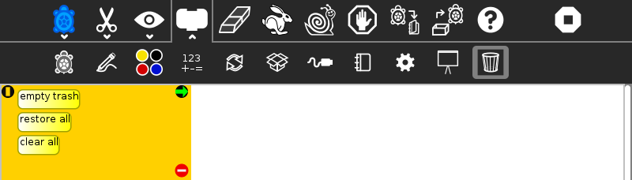
This palette holds any blocks that have been put in the trash. You can drag blocks out of the trash to restore them. The trash palette is emptied when you quit Turtle Art.
Vertical palettes¶
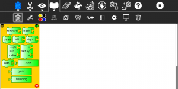
An example of a vertical palette. Vertical palettes are used by default on the OLPC XO laptops running older versions of Sugar.¶
Learning with Turtle Art¶
Tony Forster and Mokurai have created a number of Activities/Turtle Art/Tutorials Turtle Art Tutorials on a wide range of math, programming, art, and Computer Science topics. There is also a substantial literature of educational materials using the Logo programming language, from which Turtle Art and Turtle Blocks derive. The Exploring with Logo series from MIT Press is particularly recommended for showing how far beyond simple graphics Logo can go. Mokurai recommends starting with his first three, specifically designed for helping beginners of all ages, starting with the preliterate in preschool.
You be the Turtle without the computer.
Mathematics and art, an introduction to TA.
Extending Turtle Art¶
There are versions of Turtle Art in several programming languages and environments, including Logo, Python, Smalltalk, and others. Turtle Art can export programs in Logo, as explained below. There are programmable blocks in Turtle Art which make it possible to include any Python program within the Turtle Art world. The simplest case is a single function call used in a graphing program, but there is no inherent limit on what capabilities of Python one can add to TA.
Exporting to Berkeley Logo¶
Turtle Art can export its projects to Berkeley Logo (using either View Source or the Save as Logo button on the Project Toolbar)
Python Blocks in Turtle Art¶
There are two ways to create Python blocks: by loading sample code provided with Turtle Art or by loading Python code the your Journal.
Loading sample code
A number of individual sample programs are provided. Clicking on the Load Python Block button on the Load/Save Toolbar
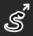
will invoke a file-selector dialog. Select the sample that you want and it will be both copied to the Journal and loaded into a Python block.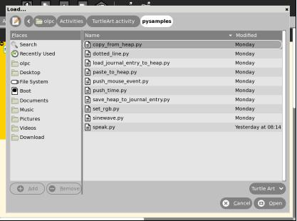
Loading code from the Journal
Clicking on a Python block that has been dragged onto the canvas from the Extras palette will invoke an object-selector dialog.
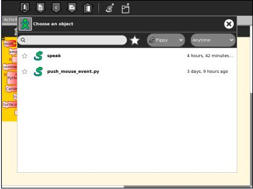
Select the Python code that that you want and that code will be loaded into the selected block.
You can’t run a Python block by clicking on it, as that opens the object selector; instead attach the block to another one and click elsewhere on the stack you have created.
Which ever way you create them, multiple Python blocks can have different code loaded in them.
Modifying Turtle Art¶
Turtle Art is under the MIT license. You are free to use it and learn with it. You are also encourage to modify it to suit your needs or just for a further opportunity to learn.
Much of the motivation behind the Version 83 refactoring of the code was to make it easier for you to make changes. Most changes can be confined to two modules: taconstants.py and talogo.py. The former defines the blocks and palettes; the latter defines what code is executed by a block.
Note: As of Version 106, there is also support for plugins. If you can use the plugin mechanism to add support for additional devices, e.g., Arduino, or for making modifications such as are described below without making changes to the standard code base. (The advantage to the latter is that your changes will remain intact even after you upgrade to a newer version.)
The tabasics.py file contains the constants that by-in-large determine the behavior of Turtle Art. Notably, the block palettes are defined below. If you want to add a new block to Turtle Art, you could simply add a block of code to that file or to turtle_block_plugin.py, which contains additional blocks. (Even better, write your own plugin!!)
Adding a new palette is simply a matter of:
palette = make_palette('mypalette', # the name of your palette
colors=["#00FF00", "#00A000"],
help_string=_('Palette of my custom commands'))
For example, if we want to add a new turtle command, ‘uturn’, we’d use the add_block method in the Palette class.
palette.add_block('uturn', # the name of your block
style='basic-style', # the block style
label=_('u turn'), # the label for the block
prim_name='uturn', # code reference (see below)
help_string=_('turns the turtle 180 degrees'))
Next, you need to define what your block will do. def_prim takes 3 arguments: the primitive name, the number of arguments—0 in this case—and the function to call—in this case, the canvas.seth function to set the heading.
self.tw.lc.def_prim('uturn', 0,
lambda self: self.tw.canvas.seth(self.tw.canvas.heading + 180))
That’s it. When you next run Turtle Art, you will have a ‘uturn’ block on the ‘mypalette’ palette.
You will have to create icons for the palette-selector buttons. These are kept in the icons subdirectory. You need two icons: mypaletteoff.svg and mypaletteon.svg, where ‘mypalette’ is the same string as the entry you used in instantiating the Palette class. Note that the icons should be the same size (55x55) as the others. (This is the default icon size for Sugar toolbars.)
Where to report problems¶
Please file bug reports here.
Credits¶
Walter Bender and Raúl Gutiérrez Segalés maintain the code (with some occasional help from Simon Schampijer)
Alan Jhonn Aguiar Schwyn and the Butia Team have provided great feedback and many patches.
Especially helpful feedback from Tony Forster, Guzmán Trinidad, and Bill Kerr
Brian Silverman is the first author of Turtle Art